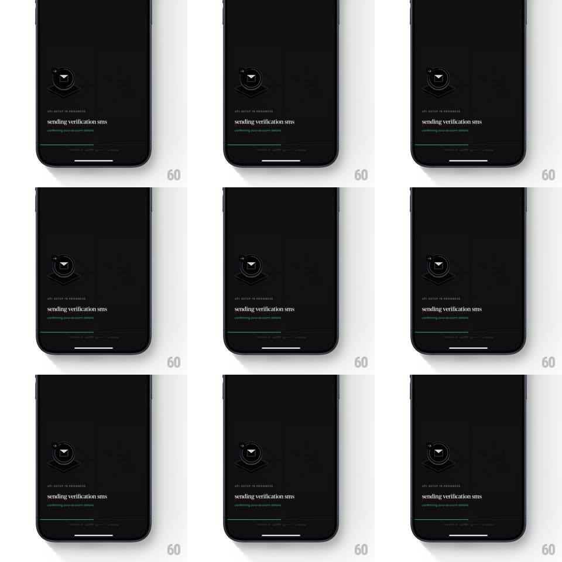

Media
Frame-by-frame

Rebuild this interaction 1:1: CRED's UPI verification screen - on a near-black screen, a floating dark envelope illustration bobs gently inside a thin spinning circular loader while "sending verification sms" text sits below and a green progress bar creeps along the bottom edge.

Rebuild this interaction 1:1: CRED's UPI verification screen - on a near-black screen, a floating dark envelope illustration bobs gently inside a thin spinning circular loader while "sending verification sms" text sits below and a green progress bar creeps along the bottom edge. ## Integration Integration: stack-agnostic spec - springs given as stiffness/damping, timed motions as duration + curve; map every value to your framework and animation library of choice. ## Scene Black screen. Upper third: a small dark envelope icon floating above a thin chevron shadow, ringed by a faint circular track with a rotating arc. Middle: kicker "UPI SETUP IN PROGRESS", headline "sending verification sms", green subline "confirming your account details". Bottom edge: a full-width hairline green progress bar above gray placeholder bars. ## Motion spec Pattern: layered ambient loading - spin, bob, creep. - Envelope: bobs vertically (translateY +/-6px, ~2.4s, ease-in-out, seamless loop) with a matching shadow squash (~8% scale). - Loader ring: a thin light arc (~90deg sweep) rotates continuously around the envelope (1.4s per revolution, linear). - Bottom progress bar: creeps left to right (~85% over 6s, ease-out), slowing as it approaches the end (indeterminate-feeling but bounded). - Text block is static; green subline pulses opacity subtly (0.6 -> 1, 1.8s loop). ## Calibration - All three motions run simultaneously at different periods - the calm comes from their independence. - Keep the envelope dark-on-dark with only a faint rim light; the spin arc is the brightest element. ## Reduced motion Static envelope; the loader ring becomes a simple opacity pulse; the progress bar still advances. ## Don't miss - The progress bar lives at the very bottom edge, detached from the text block. - Placeholder bars under the progress bar hint at upcoming content - keep them faint.